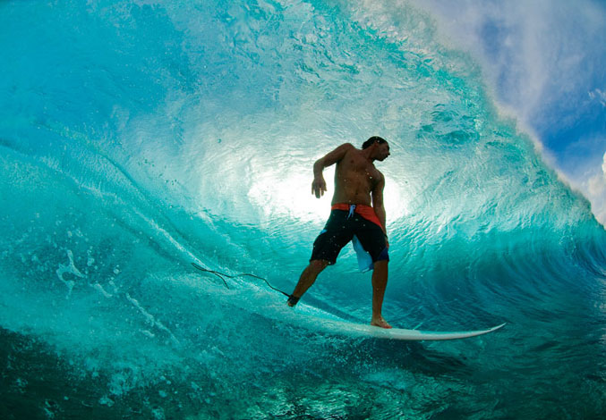
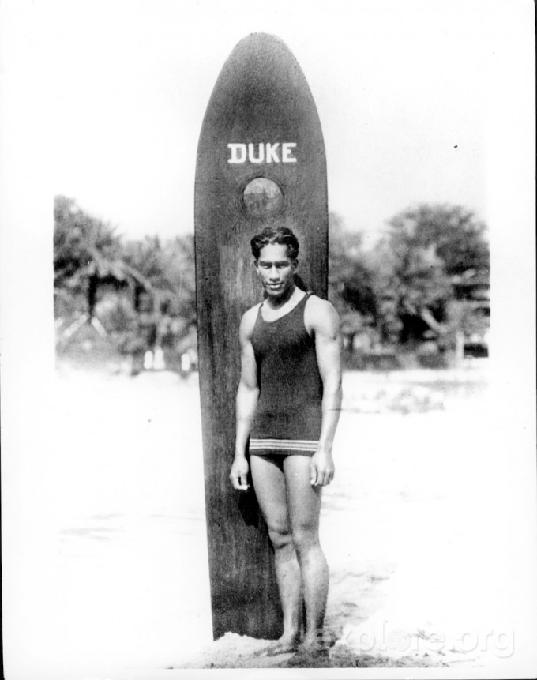
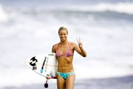
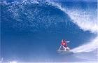

Surfing is a surface water sport in which the wave rider, referred to as a surfer, rides on the forward or deep face of a moving wave, which is usually carrying the surfer toward the shore. Waves suitable for surfing are primarily found in the ocean, but can also be found in lakes or in rivers in the form of a standing wave or tidal bore. However, surfers can also utilize artificial waves such as those from boat wakes and the waves created in artificial wave pools.
The term surfing refers to the act of riding a wave, regardless of whether the wave is ridden with a board or without a board, and regardless of the stance used (goofy or regular stance). The native peoples of the Pacific, for instance, surfed waves on alaia, paipo, and other such craft, and did so on their belly and knees. The modern-day definition of surfing, however, most often refers to a surfer riding a wave standing up on a surfboard; this is also referred to as stand-up surfing.
One variety of stand-up surfing is paddle boarding. Another prominent form of surfing is body boarding, when a surfer rides a wave on a bodyboard, either lying on their belly, drop knee, or sometimes even standing up on a body board. Other types of surfing include knee boarding, surf matting (riding inflatable mats), and using foils. Body surfing, where the wave is surfed without a board, using the surfer's own body to catch and ride the wave, is very common and is considered by some to be the purest form of surfing.
Andy Irons The Duke Keala Kennelly Heather Clark